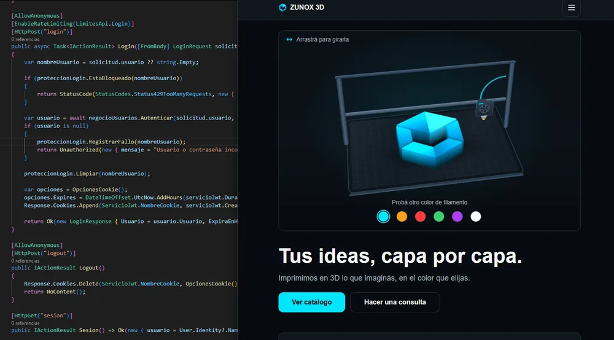

Proyecto real, en equipo
Sistema 3D
Sistema web de gestión para ZUNOX 3D, el negocio de impresión 3D de un amigo, que lo va a usar en el día a día. Lo hacemos en equipo de tres, como TechIntoBios. Los administradores cargan productos por categoría y arman los pedidos, el cliente sigue el estado de su pedido y la landing muestra el catálogo con un botón para consultar por WhatsApp.
La API es asincrónica (async/await), con ADO.NET sobre PostgreSQL, login con JWT en cookie, contraseñas con BCrypt y límite de intentos. En la facultad aprendí a programar de forma sincrónica; acá lo hago asincrónico.
Lo que falta: la baja de productos y evitar duplicados.
Ver código